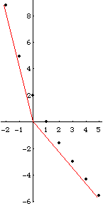
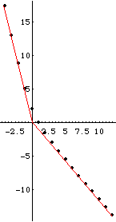

| Pictured here are two graphs of some points on the tau(q) graph for these values:
r = 0.5, p1 = 0.05,
p2 = 0.2, p3 = 0.3, and
p4 = 0.45. |
| 
 |
| Examining these pictures we see visual evidence that this
tau(q) curve has oblique asymptotes. |
| To estimate the slope of the q -> -infinity asymptote,
compute the slope determined by the points (-4, tau(-4)) =
(-4, 17.29) and (0, 0), obtaining 17.29/(-4) = -4.32. |
| To estimate the slope of the q -> infinity asymptote,
compute the slope determined by the points (12, tau(12)) =
(12, -13.81) and (0, 0), obtaining (-13.81)/12 = -1.15. |
| We have seen the slope of the q -> infinity asymptote
is -max(log(pi)log(ri)), and the
slope of the q -> infinity asymptote
is -min(Log(pi)Log(ri)). |
| For these values - all ri = 0.5 and
pi = 0.05, 0.2, 0.3, and 0.45 - we have |
| Log(pi)/Log(ri) = 4.32, 2.32, 1.74, 1.15 |
| Our estimates appear to have been quite good. |